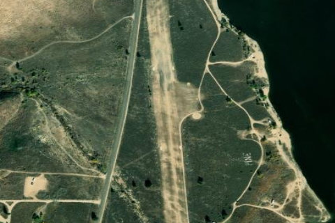

PINE
1U9 · ID

Aerial imagery source: Esri, Vantor, Earthstar Geographics, and the GIS User Community
| Identifier | 1U9 |
|---|---|
| State | ID |
| Runway length | 2,300 ft |
| Runway width | 125 ft |
| Surface | TURF |
| Runway | 16/34 |
| Elevation | 4,232 ft |
| Ownership | public |
| CTAF | 122.9 |
| Coordinates | 43.46625, -115.31002777 |
Notes
[idaho_itd] State Airfield [shortfield] Location Overview The Pine Airstrip is a state-owned strip situated right on the shore of Anderson Ranch Reservoir in Elmore County, southwestern Idaho. The reservoir itself sits in a mountain valley carved by the South Fork of the Boise River, surrounded by sagebrush slopes and pine-covered hills northeast of Mountain Home. The small community of Pine is just a short drive north of the strip. Camping & Recreation There are no camping amenities at the airstrip itself, but the area more than makes up for it in recreational opportunity. When water levels are up, the strip is an excellent spot to launch a float tube or raft and fish for trout, kokanee salmon, and smallmouth bass. The Pine Recreation Site, a Boise National Forest campground at the north end of the reservoir, offers seven developed campsites with covered picnic tables, fire pits, a vault outhouse, and a boat ramp with a handling dock. The broader area offers hot springs, ATV trails, fly fishing, boating, snowmobiling in winter, and access to historic mining towns like Rocky Bar and Atlanta. Notes & Warnings The most important consideration at Pine is water level — the airstrip sits on the reservoir's shore, so when water levels are low, the lake can be a considerable distance away. Pilots should check current reservoir conditions before flying in, as the strip's character changes significantly with the seasons. Being a backcountry strip at elevation in Idaho's mountain terrain, density altitude and surface conditions should be carefully evaluated, particularly in warmer months. History The Pine airstrip owes its existence to the broader story of Anderson Ranch Dam and Reservoir. Construction on Anderson Ranch Dam began in 1941 after the U.S. Army Corps of Engineers and the Department of Agriculture determined the South Fork of the Boise River site was the most desirable for flood control, irrigation, and siltation reduction. The dam and powerplant became fully operational in mid-1951, and at the time of its completion, it was the tallest earth-filled dam in the world. The reservoir that flooded the valley created the shoreline on which the Pine airstrip was eventually developed, giving pilots access to a remote mountain lake that hadn't existed a generation before. The area around Pine itself has much deeper roots — the old mining camp of Pine Grove was a busy hub for prospectors, and the toll road from Toll Gate to Rocky Bar operated from 1866 to 1888. The airstrip today is managed by the State of Idaho and serves as a gateway to one of the more unusual fly-in destinations in the region.